Inhalt Index DeskTop Bronstein

 Dynamische Systeme und Chaos Bifurkationstheorie, Wege zum Chaos Übergänge zum Chaos Auflösung eines Torus
Dynamische Systeme und Chaos Bifurkationstheorie, Wege zum Chaos Übergänge zum Chaos Auflösung eines Torus


Beim Glattheitsverlust und Zerfall eines Torus spielen die Eigenschaften invarianter Kurven der POINCARÉ-Abbildung eine wichtige Rolle. Stellt man die POINCARÉ-Abbildung in Polarkoordinaten dar, so erhält man unter gewissen Voraussetzungen losgekoppelte Abbildungen der Winkelvariablen als aussagefähige Hilfsabbildungen auf dem Einheitskreis. Diese sind im Falle glatter invarianter Kurven (linke Abbildung) umkehrbar und im Falle nichtglatter Kurven (rechte Abbildung) nicht umkehrbar.
Eine Abbildung 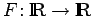 mit 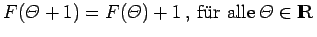, die das dynamische System
erzeugt, heißt äquivariant. Jeder solcher Abbildungen läßt sich auch eine Abbildung auf dem Einheitskreis  mit 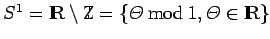 zuordnen. Dabei ist 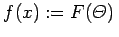, wenn für die Äquivalenzklasse 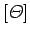 die Beziehung 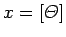 gilt. Man bezeichnet F als eine von f geliftete Abbildung. Offenbar ist diese Zuordnung nicht eindeutig.
mit 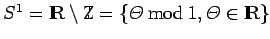 zuordnen. Dabei ist 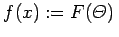, wenn für die Äquivalenzklasse 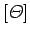 die Beziehung 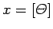 gilt. Man bezeichnet F als eine von f geliftete Abbildung. Offenbar ist diese Zuordnung nicht eindeutig.
Im Gegensatz zur obigen Formel (17.41) ist
| Beispiel |
|
Sind |
| 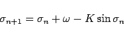 | (17.87) |
läßt sich durch die Transformation 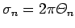 auf das System
mit 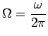 überführen. Mit 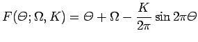 liegt eine äquivariante Abbildung vor, die die Standardform der Kreisabbildung erzeugt.
Der Orbit 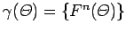 von (17.41) ist genau dann ein q-periodischer Orbit von (17.42) in , wenn er ein p/q-Zyklus von (17.41) ist, d.h., wenn eine ganze Zahl p existiert, so daß 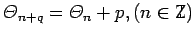 gilt. Die Abbildung  heißt orientierungstreu, wenn es eine zugehörige geliftete Abbildung F gibt, die monoton wachsend ist. Ist F aus (17.41) ein monoton wachsender Homöomorphismus, so existiert für jedes 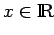 der Grenzwert 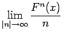, und dieser Grenzwert hängt nicht von x ab. Es kann deshalb der Ausdruck 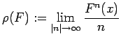 definiert werden. Ist
heißt orientierungstreu, wenn es eine zugehörige geliftete Abbildung F gibt, die monoton wachsend ist. Ist F aus (17.41) ein monoton wachsender Homöomorphismus, so existiert für jedes 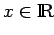 der Grenzwert 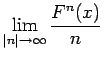, und dieser Grenzwert hängt nicht von x ab. Es kann deshalb der Ausdruck 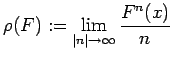 definiert werden. Ist  ein Homöomorphismus und sind F sowie
ein Homöomorphismus und sind F sowie  zwei von f geliftete Abbildungen, so gilt 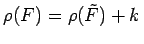, wobei k eine ganze Zahl ist. Aufgrund der letzten Eigenschaft läßt sich die Rotationszahl (oder Windungszahl) 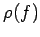 eines orientierungstreuen Homöomorphismus
zwei von f geliftete Abbildungen, so gilt 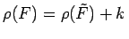, wobei k eine ganze Zahl ist. Aufgrund der letzten Eigenschaft läßt sich die Rotationszahl (oder Windungszahl) 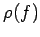 eines orientierungstreuen Homöomorphismus  als 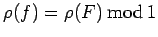 definieren, wobei F eine beliebige von f geliftete Abbildung ist.
als 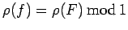 definieren, wobei F eine beliebige von f geliftete Abbildung ist.
Ist  in (17.42) ein orientierungstreuer Homöomorphismus, so hat die Rotationszahl folgende Eigenschaften (s. Lit. 17.11):
in (17.42) ein orientierungstreuer Homöomorphismus, so hat die Rotationszahl folgende Eigenschaften (s. Lit. 17.11):
Satz von Denjoy: Ist  ein orientierungstreuer C2-Diffeomorphismus und ist die Rotationszahl 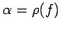 irrational, so ist f topologisch konjugiert zu einer reinen Drehung, deren geliftete Abbildung 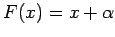 lautet.
ein orientierungstreuer C2-Diffeomorphismus und ist die Rotationszahl 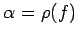 irrational, so ist f topologisch konjugiert zu einer reinen Drehung, deren geliftete Abbildung 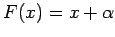 lautet.